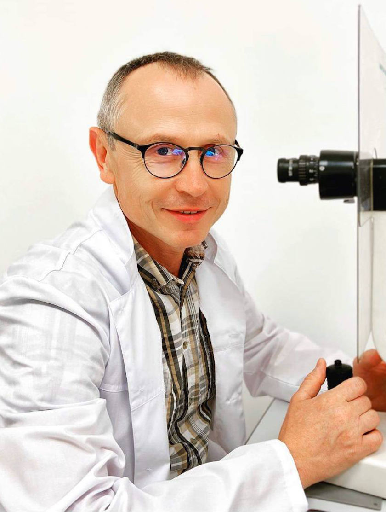
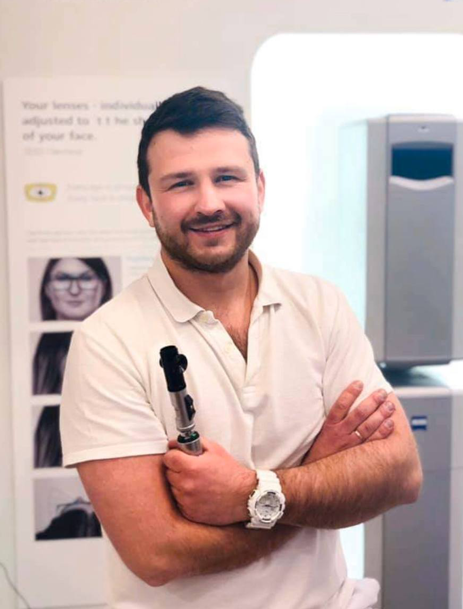
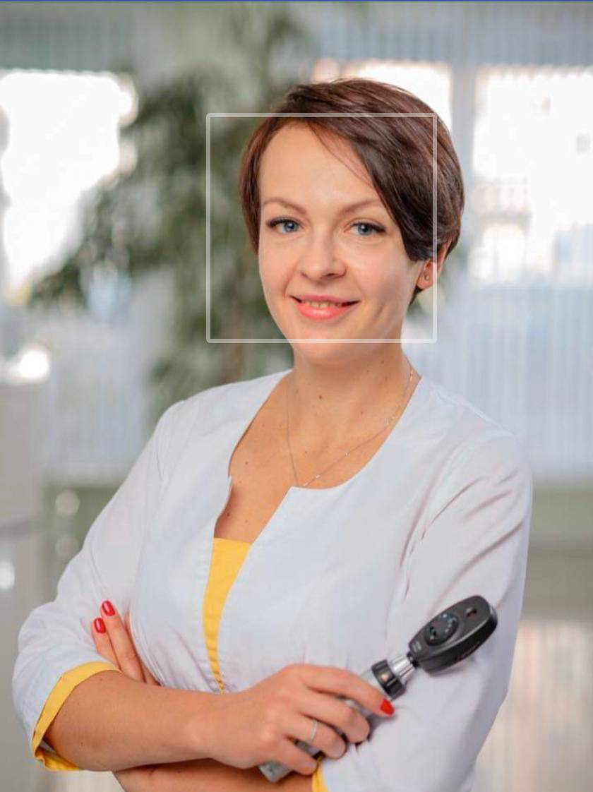

Історія Bon Optic бере свій початок з 1996 року, коли в майстерні маленької комірки почали виготовлятись перші окуляри ентузіастом та засновником нашої оптики Бондаренком Ігорем Юрійовичем. Відбувалось це здебільшого вночі (бо вдень потрібно було заробляти на життя ).
Та відданість своїй справі дала результати і дуже швидко BonOptic стала справою життя. Захоплений роботою батько почав залучати до справи сина. Тоді ще школяра,а зараз висококваліфікованого лікаря-офтальмолога, який з шкільної лави переймав від батька любов до оптометрії. Так почалась сімейна історія BonOptic…
Зараз це мережа висококласних оптик та офтальмологічних кабінетів, де надається увесь спектр офтальмологічних послуг. Але одне залишається незмінним – це захоплення справою, яку ми робимо,це сімейні традиції,які непорушні. Традиції якості,людяності та порядності, якими ми керуємось у своїй роботі. Це тисячі задоволених пацієнтів, багато з яких за роки співпраці з нами, стали друзями сім`ї.
Це – якість в поколіннях!
НАШІ ЛІКАРІ
Засновник мережі BonOptic. Лікар-офтальмолог першої кваліфікаційної категорії, дитячий офтальмолог. Стаж роботи за спеціальністю 28 років. Спеціалізація: Підбір окулярів Складна корекція зору (прогресивні,офісні окуляри), Підбір м`яких контактних лінз Діагностика та лікування запальних захворювань переднього відрізку ока Апаратне лікування косоокості та амбліопії у дітей Іде в ногу з сучасними тенденціями, постійно вдосконалює свої навики на регіональних та міжнародних конференціях, симпозіумах, майстер-класах. Як ніхто інший уміє знайти індивідуальний підхід до кожного пацієнта,філософ від медицини та по життю..

БОНДАРЕНКО ВІКТОР ІГОРОВИЧ
Лікар-офтальмолог другої кваліфікаційної категорії, дитячий офтальмолог. Стаж роботи за cпеціальністю 7 років. Спеціалізація: Підбір окулярів Складна корекція зору Призматична корекція Корекція м`якими контактними лінзами Ортокератологічне лікування (корекція зору нічними лінзами Paragon та Swiss Lens) Апаратне лікування косоокості та амбліопії у дітей. Один із небагатьох спеціалістів у Вінниці,який володіє методом призматичної корекції (використовується при косоокості). Одним із перших у Вінниці оволодів методикою ортокератологічного лікування. Дякуючи Віктору Ігоревичу, BonOptic на сьогодні єдині у Вінниці, де доступна кастомізована швейцарська ортокератологічна лінза Swiss Lens. Неймовірно захоплений своєю справою. А ще, дякуючи своїй доброті,щирості та відкритості, найулюбленіший лікар наших найменших пацієнтів.

БОНДАРЕНКО ОЛЬГА ВОЛОДИМИРІВНА
Лікар-офтальмолог першої кваліфікаційної категорії. Ретинолог. Стаж роботи за спеціальністю 13 років. Спеціалізація: Діагностика захворювань заднього відрізку ока Лазерні та ін`єкційні методи лікування діабетичної ретинопатії,вікової макулодистрофії. Діагностика та лазерні методи лікування глаукоми Лазерне лікування вторинної катаракти Сертифікований спеціаліст по лазерним методам лікування в офтальмології. Володіє більшістю доступних на сьогодні лазерних методів лікування патології ока. А саме, безопераційним лазерним лікування глаукоми, діабету, вторинної катаракти. Прекрасний діагност. Однією із перших в Україні починала роботу з оптичним когерентними томографом. Грамотно інтерпретує знімки Ангіо-ОКТ та флуоресцентної ангіографії. Доброзичлива,щира та надзвичайно уважна до пацієнтів. Із співчуттям ставиться до кожного. Намагається лікувати не лише хворобу а і душу людини.